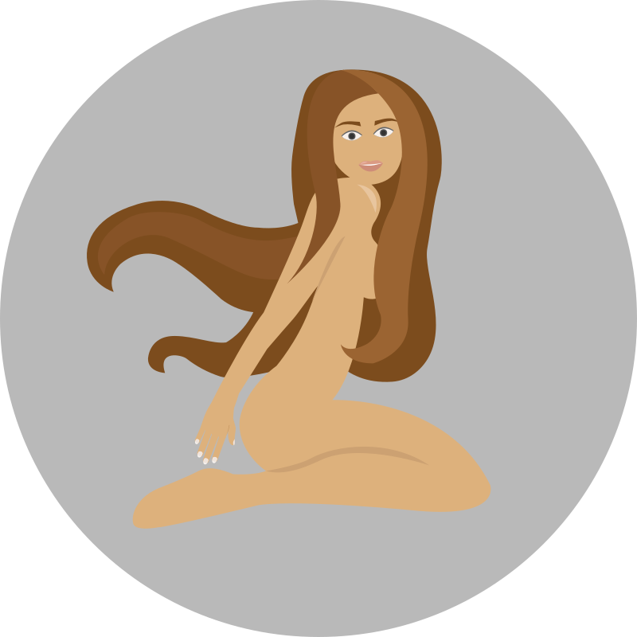
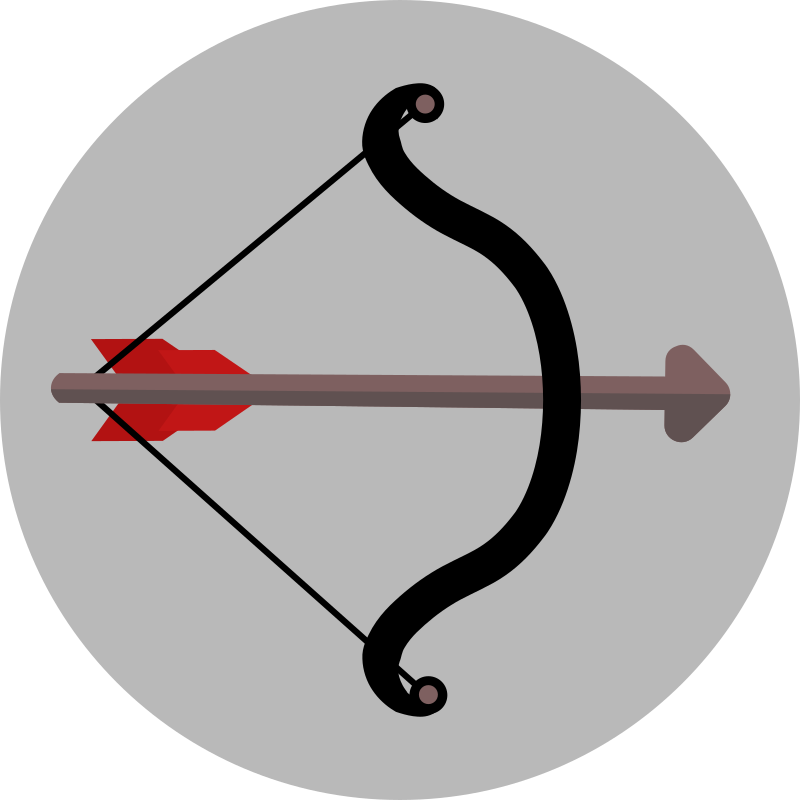
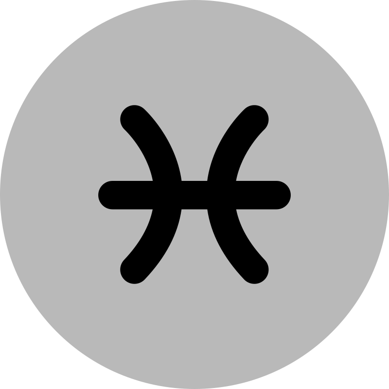
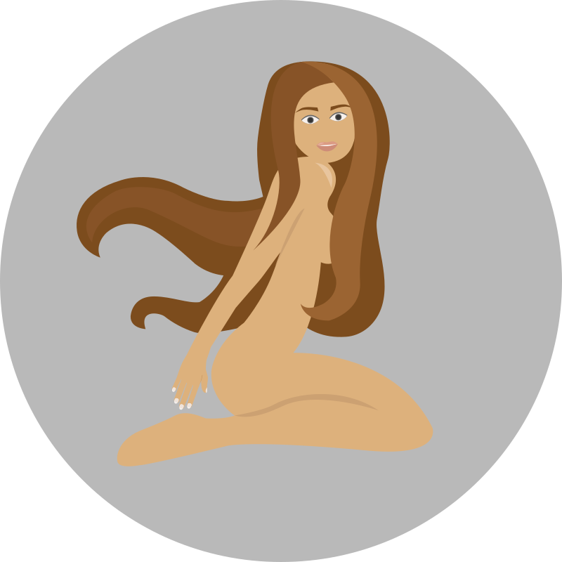
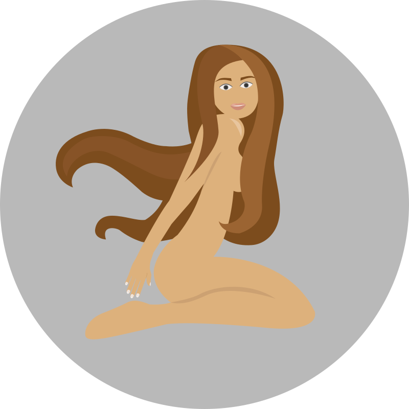
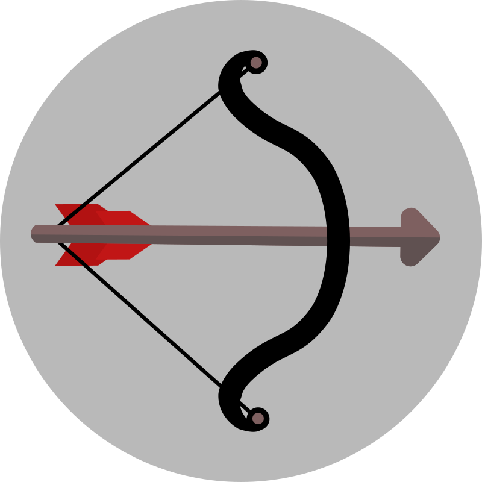
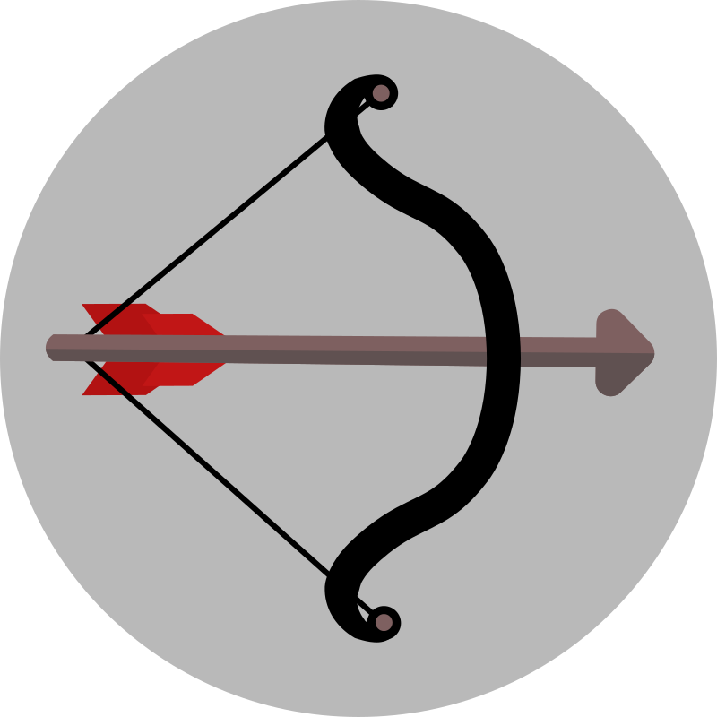
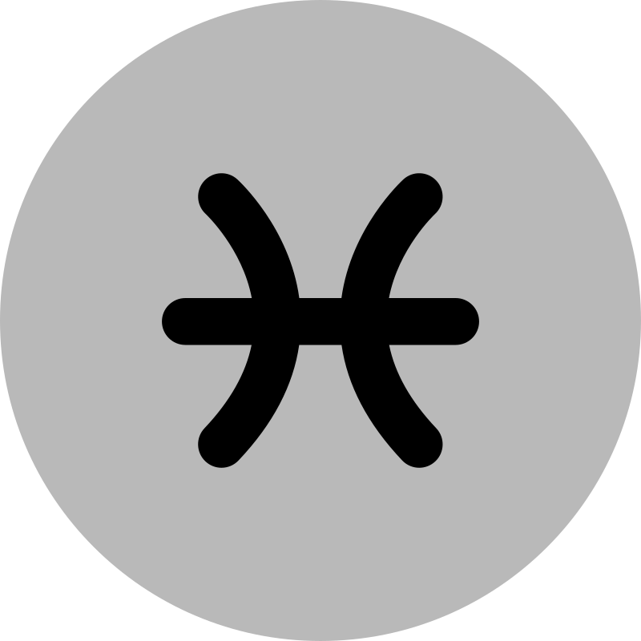
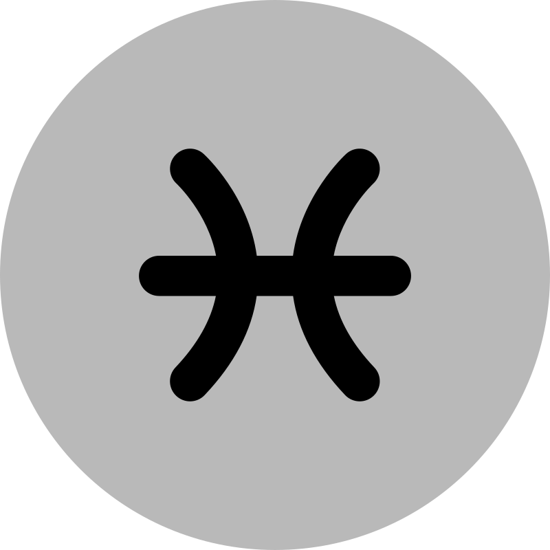

Entdecke die faszinierende Welt der Planeten
Entfalte dein
astro
logisches Potenzial.
Entdecke
you can ship things.
Liebe.
Partnerschaft.
Gesundheit.
Beruf.
Familie.
Freundschaft.
Glück.
Harmonie.
Kreativität.
Wohlstand.
Zukunft.
Transformation.
Selbstfindung.
Schicksal.
Veränderung.
Balance.
Spiritualität.
Intuition.
Weisheit.
Verbindung.
Entwicklung.
Energie.
Загрузка…
0157 381 81 756
Die erste astrologische Beratung ist
kostenlos
für dich.



Die Sternzeichen – ein Schlüssel zu deiner Persönlichkeit.


 



 


 
